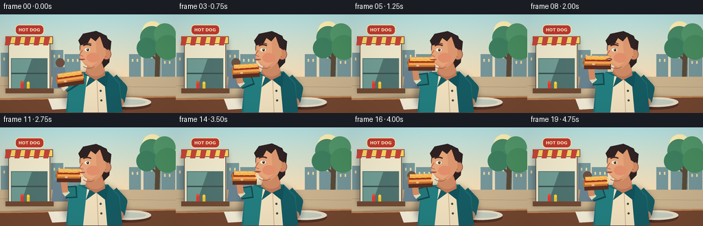
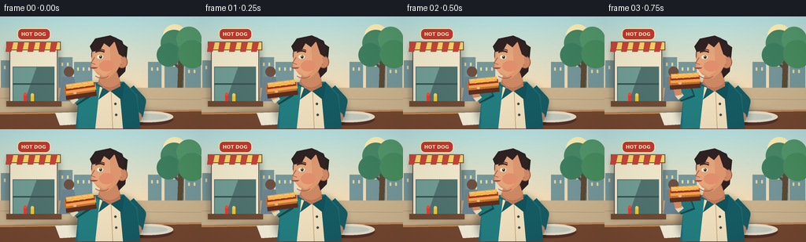

CODING AGENTS AS PIXEL WORLD MODELS
traex/GPT-5.6-Sol · motion_rationality_0016
点击播放 · 原生 RGB 像素
逐轮保存的候选
回放视频、检查图与代码变化。
每份候选均可单独播放。实际图片检查记录在下方工具轨迹中。
候选 01播放与检查图
点击播放 · 原生 RGB 像素


展开代码变化
--- 上一保存版本
+++ 本次保存版本
@@ -0,0 +1,224 @@
+from pathlib import Path
+import json, math
+import numpy as np
+from PIL import Image, ImageDraw, ImageFilter, ImageFont
+import artifact_io
+
+CASE = Path(__file__).resolve().parent
+spec = json.loads((CASE/'task_spec.json').read_text())
+W,H,N = spec['width'],spec['height'],spec['frames']
+S=4
+rng=np.random.default_rng(24)
+
+def smooth(x):
+ x=max(0.0,min(1.0,x)); return x*x*(3-2*x)
+
+def C(v): return tuple(int(x) for x in v)
+def scbox(b): return tuple(int(round(v*S)) for v in b)
+def pts(p): return [(int(round(x*S)),int(round(y*S))) for x,y in p]
+
+def ellipse(d,b,fill,outline=None,width=1): d.ellipse(scbox(b),fill=fill,outline=outline,width=max(1,int(width*S)))
+def rect(d,b,fill,outline=None,width=1): d.rectangle(scbox(b),fill=fill,outline=outline,width=max(1,int(width*S)))
+def rr(d,b,r,fill,outline=None,width=1): d.rounded_rectangle(scbox(b),radius=int(r*S),fill=fill,outline=outline,width=max(1,int(width*S)))
+def poly(d,p,fill,outline=None): d.polygon(pts(p),fill=fill); outline and d.line(pts(p+[p[0]]),fill=outline,width=S)
+def line(d,p,fill,width,joint='curve'): d.line(pts(p),fill=fill,width=max(1,int(width*S)),joint=joint)
+def arc(d,b,start,end,fill,width=1): d.arc(scbox(b),start,end,fill=fill,width=max(1,int(width*S)))
+
+def shadow(im, shapes, blur=3, alpha=70):
+ lay=Image.new('RGBA',im.size,(0,0,0,0)); q=ImageDraw.Draw(lay)
+ for kind, data in shapes:
+ if kind=='e': q.ellipse(scbox(data),fill=(29,25,35,alpha))
+ elif kind=='p': q.polygon(pts(data),fill=(29,25,35,alpha))
+ elif kind=='r': q.rounded_rectangle(scbox(data[0]),radius=int(data[1]*S),fill=(29,25,35,alpha))
+ im.alpha_composite(lay.filter(ImageFilter.GaussianBlur(blur*S)))
+
+def transform(local,cx,cy,ang):
+ co,si=math.cos(ang),math.sin(ang)
+ return [(cx+x*co-y*si,cy+x*si+y*co) for x,y in local]
+
+def background(t):
+ # calm late-afternoon sky gradient with barely perceptible film texture
+ yy=np.arange(H*S)[:,None]
+ top=np.array([180,225,226]); bot=np.array([248,220,180])
+ a=np.minimum(yy/(95*S),1.0)[...,None]
+ arr=np.tile((top*(1-a)+bot*a),(1,W*S,1))
+ noise=rng.normal(0,0.9,(H*S,W*S,1))
+ arr=np.clip(arr+noise,0,255).astype('uint8')
+ im=Image.fromarray(arr,'RGB').convert('RGBA'); d=ImageDraw.Draw(im)
+ # distant sun and skyline
+ ellipse(d,(207,10,237,40),(255,239,179,115))
+ for x,y,w in [(1,56,24),(25,50,17),(43,60,28),(74,52,18),(94,58,23),(188,58,17),(209,53,25),(235,61,20)]:
+ rect(d,(x,y,x+w,92),(118,151,154,255))
+ for wx in range(x+4,x+w-2,7): rect(d,(wx,y+7,wx+2,y+11),(230,215,158,170))
+ # tree on right
+ line(d,[(230,45),(228,110)],(91,75,56,255),7)
+ line(d,[(229,67),(214,53)],(91,75,56,255),3)
+ line(d,[(229,59),(242,43)],(91,75,56,255),3)
+ sway=math.sin(t*math.pi*2)*1.0
+ for cx,cy,r,col in [(221+sway,34,17,(72,137,102,255)),(240+sway,29,16,(83,151,107,255)),(214+sway,49,15,(62,128,96,255)),(244+sway,48,18,(72,140,95,255))]:
+ ellipse(d,(cx-r,cy-r,cx+r,cy+r),col)
+ # ground
+ rect(d,(0,91,256,144),(204,180,143,255))
+ for y in [104,122,137]: line(d,[(0,y),(256,y+2)],(181,157,127,150),1)
+ # hot-dog kiosk at left
+ shadow(im,[('r',((8,35,77,115),3))],3,60)
+ rect(d,(12,42,73,113),(239,232,204,255),outline=(93,74,62,255),width=1)
+ rect(d,(16,64,69,108),(80,115,111,255))
+ # window reflection
+ poly(d,[(17,65),(46,65),(31,108),(17,108)],(112,157,149,255))
+ line(d,[(16,86),(69,86)],(60,83,83,255),2)
+ rect(d,(8,32,77,43),(246,213,102,255),outline=(111,75,55,255))
+ # striped awning
+ for x in range(9,77,14): poly(d,[(x,32),(x+8,32),(x+5,45),(x-2,45)],(197,69,56,255))
+ # rounded sign
+ rr(d,(22,15,64,30),6,(190,58,51,255),outline=(255,236,171,255),width=1)
+ try:
+ font=ImageFont.truetype('/usr/share/fonts/truetype/dejavu/DejaVuSans-Bold.ttf',6*S)
+ d.text((27*S,19*S),'HOT DOG',font=font,fill=(255,240,189,255),stroke_width=0)
+ except: pass
+ # condiment bottles and counter
+ rect(d,(8,108,78,115),(112,74,52,255)); rect(d,(30,99,34,108),(238,55,45,255)); ellipse(d,(30,97,34,101),(246,74,51,255))
+ rect(d,(39,100,43,108),(242,197,44,255)); ellipse(d,(39,98,43,102),(246,212,65,255))
+ # background patron silhouettes
+ ellipse(d,(81,64,94,77),(108,81,66,255)); poly(d,[(79,77),(94,77),(99,108),(75,108)],(106,131,144,255))
+ # table foreground
+ shadow(im,[('e',(4,118,252,145))],3,80)
+ poly(d,[(0,123),(256,119),(256,144),(0,144)],(117,72,49,255))
+ line(d,[(0,124),(256,120)],(202,139,86,255),2)
+ # plate and napkin on table
+ ellipse(d,(154,124,220,139),(83,50,40,90)); ellipse(d,(156,121,220,135),(231,224,203,255)); ellipse(d,(163,124,213,132),(198,206,193,255))
+ poly(d,[(70,123),(105,122),(111,137),(76,139)],(242,236,216,255))
+ return im
+
+def draw_person(im, fi):
+ d=ImageDraw.Draw(im)
+ p=fi/(N-1)
+ lift=smooth(p/0.32) if p<.32 else 1.0
+ if p>.58: lift=1-0.46*smooth((p-.58)/.42)
+ chew=0 if p<.55 else math.sin((p-.55)*math.pi*7)
+ bob=(0.35*math.sin(p*math.pi*2) + (0.45*chew if p>.55 else 0))
+ hy=bob
+ # body cast shadow
+ shadow(im,[('e',(92,82,184,154))],4,85)
+ # far arm hanging behind
+ line(d,[(164,93),(178,108),(174,127)],(23,92,98,255),15)
+ ellipse(d,(169,122,180,135),(193,125,93,255))
+ # torso / jacket / shirt
+ poly(d,[(114,84),(157,83),(174,100),(178,143),(96,143),(100,102)],(29,112,117,255))
+ # jacket shading and lapels
+ poly(d,[(114,84),(132,94),(126,143),(99,143),(100,103)],(35,126,128,255))
+ poly(d,[(157,84),(139,95),(148,143),(178,143),(173,101)],(22,91,99,255))
+ poly(d,[(127,87),(140,94),(151,87),(156,143),(121,143)],(240,224,190,255))
+ poly(d,[(114,84),(131,89),(125,106),(140,95)],(24,91,98,255))
+ poly(d,[(158,84),(149,88),(140,95),(155,107)],(18,82,91,255))
+ line(d,[(141,96),(143,143)],(199,175,142,255),1)
+ ellipse(d,(145,110,148,113),(64,76,71,255)); ellipse(d,(146,124,149,127),(64,76,71,255))
+ # neck
+ poly(d,[(128,72+hy),(151,70+hy),(153,89),(139,96),(124,86)],(189,119,88,255))
+ ellipse(d,(126,70+hy,152,90+hy),(205,137,100,255))
+ # hair behind head
+ ellipse(d,(116,25+hy,160,73+hy),(48,37,37,255))
+ poly(d,[(146,28+hy),(162,39+hy),(159,70+hy),(151,78+hy),(145,59+hy)],(45,34,34,255))
+ # ear
+ ellipse(d,(148,50+hy,162,66+hy),(205,137,100,255),outline=(155,89,71,255))
+ arc(d,(151,53+hy,159,62+hy),100,260,(160,94,74,255),1)
+ # face, three-quarter toward left, defined jaw
+ poly(d,[(123,31+hy),(146,29+hy),(154,38+hy),(154,59+hy),(148,70+hy),(137,79+hy),(124,74+hy),(116,64+hy),(117,44+hy)],(220,151,111,255))
+ # face light
+ poly(d,[(121,39+hy),(139,32+hy),(141,70+hy),(132,76+hy),(120,69+hy),(116,58+hy)],(229,164,121,255))
+ # temple/cheek warmth
+ ellipse(d,(126,56+hy,145,70+hy),(225,143,108,105))
+ # hair cap and locks
+ poly(d,[(117,45+hy),(114,38+hy),(121,28+hy),(140,24+hy),(155,31+hy),(159,42+hy),(151,39+hy),(145,32+hy),(139,39+hy),(132,34+hy),(127,43+hy)],(46,34,35,255))
+ poly(d,[(145,30+hy),(158,38+hy),(157,52+hy),(151,48+hy)],(50,36,36,255))
+ # eyebrow and eye
+ arc(d,(120,43+hy,134,51+hy),205,330,(65,43,40,255),2)
+ ellipse(d,(123,49+hy,131,54+hy),(248,239,215,255)); ellipse(d,(126,49.5+hy,129.5,53.5+hy),(52,47,43,255)); ellipse(d,(127,50+hy,128,51+hy),(255,255,255,255))
+ # nose in profile-ish silhouette
+ line(d,[(120,52+hy),(115.5,59+hy),(121,61+hy)],(171,97,78,255),1)
+ # near arm mechanics: sleeve to elbow, forearm to wrist
+ shoulder=(112,94)
+ elbow=(93+2*lift,106-11*lift)
+ wx=91+1.5*lift
+ wy=99-25*lift
+ # arm shadow then garment sleeve
+ line(d,[shoulder,elbow],(20,73,79,255),18)
+ line(d,[(110,94),elbow],(35,119,121,255),14)
+ # sleeve cuff
+ line(d,[(elbow[0]-1,elbow[1]-2),(elbow[0]+3,elbow[1]+3)],(224,215,185,255),9)
+ # exposed forearm and hand
+ line(d,[elbow,(wx,wy)],(210,139,101,255),9)
+ ellipse(d,(wx-5,wy-5,wx+7,wy+6),(221,151,108,255),outline=(169,100,77,255))
+ # fingers curl around food
+ line(d,[(wx-1,wy-2),(wx+7,wy+1)],(167,99,75,255),1)
+ # hotdog tracks toward mouth
+ hx=101.5+0.4*lift
+ hy_food=91-24*lift
+ angle=math.radians(-8+9*lift)
+ bitten=fi>=10
+ draw_hotdog(im,hx,hy_food,angle,bitten)
+ d=ImageDraw.Draw(im)
+ # mouth laid over food edge: open for approach/bite, then chewing
+ if p<.30: openamt=0.4
+ elif p<.43: openamt=0.4+2.6*smooth((p-.30)/.13)
+ elif p<.58: openamt=3.0*(1-smooth((p-.43)/.15))
+ else: openamt=0.5+0.55*abs(chew)
+ my=65.0+hy
+ # dark mouth opening and two lips, tip is at x~122
+ ellipse(d,(115.5,my-openamt/2,123,my+openamt/2+1),(94,42,39,255))
+ arc(d,(114,my-2.5,124,my+1.5),10,168,(151,62,60,255),1.2)
+ arc(d,(115,my-0.2,123,my+3.3),195,345,(172,72,66,255),1.1)
+ if 6<=fi<=9: # teeth briefly visible during bite
+ line(d,[(117,my-0.2),(121,my+0.1)],(248,233,211,255),1)
+ # chin definition; jaw moves subtly while chewing
+ arc(d,(119,65+hy,140,79+hy+0.5*chew),35,145,(169,96,78,255),1)
+ # eyebrows lift a little in anticipation
+ if fi<9: arc(d,(120,41.5+hy-.4*lift,134,48+hy-.4*lift),205,330,(60,42,39,255),1)
+ # hand highlights/fingernails
+ ellipse(d,(wx+2,wy-3,wx+6,wy),(238,179,139,255))
+ # tiny crumbs after completed bite, dropping naturally
+ if 10<=fi<=15:
+ dt=(fi-10)/5
+ for k,(ox,oy) in enumerate([(0,0),(3,-1)]):
+ ellipse(d,(119+ox+dt*(k+1),69+oy+dt*13,120.3+ox+dt*(k+1),70.3+oy+dt*13),(215,160,82,230))
+
+def draw_hotdog(im,cx,cy,ang,bitten):
+ d=ImageDraw.Draw(im)
+ end=15 if bitten else 19
+ # cast shadow below bun
+ local=[(-20,5),(end,5)]
+ line(d,transform(local,cx+1,cy+2,ang),(92,47,33,100),12)
+ # bottom bun then sausage and upper bun, preserving clear ingredient layers
+ line(d,transform([(-20,2),(end,2)],cx,cy,ang),(194,111,50,255),11)
+ line(d,transform([(-18,1),(end+1,1)],cx,cy,ang),(240,164,78,255),8)
+ line(d,transform([(-18,-1),(end,-1)],cx,cy,ang),(159,52,37,255),5)
+ line(d,transform([(-17,-4),(end-1,-4)],cx,cy,ang),(243,176,88,255),6)
+ line(d,transform([(-16,-5),(end-2,-5)],cx,cy,ang),(255,197,104,255),2)
+ # mustard zigzag on sausage
+ mustard=[]
+ x=-14
+ while x<end-2:
+ mustard.append((x,-2.0+(1 if len(mustard)%2 else -1.0))); x+=4
+ line(d,transform(mustard,cx,cy,ang),(244,204,51,255),1.2)
+ # toast marks
+ for x in [-10,2,10]:
+ line(d,transform([(x,-6),(x+2,-5)],cx,cy,ang),(203,125,60,210),.7)
+ if bitten:
+ # pale irregular exposed crumb at the newly bitten end
+ edge=transform([(14,-5),(16,-3.5),(14.5,-1),(16,1),(14,4)],cx,cy,ang)
+ line(d,edge,(255,205,124,255),2)
+
+frames=[]
+for i in range(N):
+ im=background(i/(N-1))
+ draw_person(im,i)
+ # subtle cinematic vignette and final antialiased downsample
+ arr=np.array(im.convert('RGB')).astype(np.float32)
+ yy,xx=np.mgrid[0:H*S,0:W*S]
+ dist=((xx-W*S/2)/(W*S*.72))**2+((yy-H*S/2)/(H*S*.85))**2
+ arr*=np.clip(1-.11*dist[...,None],.84,1)
+ out=Image.fromarray(np.uint8(np.clip(arr,0,255))).resize((W,H),Image.Resampling.LANCZOS)
+ frames.append(np.asarray(out,dtype=np.uint8))
+frames=np.stack(frames)
+artifact_io.save(frames,CASE)
+print('saved',frames.shape,frames.dtype)
可观测工具轨迹
实际执行的命令与返回图片。
命令 1exit 0
/bin/bash -lc "cat prompt.txt && printf '\\n---RULES---\\n' && cat GENERATION_RULES.md && printf '\\n---SPEC---\\n' && cat task_spec.json"
命令 2exit 0
/bin/bash -lc "find . -maxdepth 2 -type f -printf '%p\\n' | sort && printf '\\nTOOLS\\n' && which ffmpeg || true && which python3 || true"
命令 3exit 0
/bin/bash -lc 'cat artifact_io.py'
命令 4exit 0
/bin/bash -lc "cat > generate.py <<'PY'
from pathlib import Path
import json, math
import numpy as np
from PIL import Image, ImageDraw, ImageFilter, ImageFont
import artifact_io
CASE = Path(__file__).resolve().parent
spec = json.loads((CASE/'task_spec.json').read_text())
W,H,N = spec['width'],spec['height'],spec['frames']
S=4
rng=np.random.default_rng(24)
def smooth(x):
x=max(0.0,min(1.0,x)); return x*x*(3-2*x)
def C(v): return tuple(int(x) for x in v)
def scbox(b): return tuple(int(round(v*S)) for v in b)
def pts(p): return [(int(round(x*S)),int(round(y*S))) for x,y in p]
def ellipse(d,b,fill,outline=None,width=1): d.ellipse(scbox(b),fill=fill,outline=outline,width=max(1,int(width*S)))
def rect(d,b,fill,outline=None,width=1): d.rectangle(scbox(b),fill=fill,outline=outline,width=max(1,int(width*S)))
def rr(d,b,r,fill,outline=None,width=1): d.rounded_rectangle(scbox(b),radius=int(r*S),fill=fill,outline=outline,width=max(1,int(width*S)))
def poly(d,p,fill,outline=None): d.polygon(pts(p),fill=fill); outline and d.line(pts(p+[p[0]]),fill=outline,width=S)
def line(d,p,fill,width,joint='curve'): d.line(pts(p),fill=fill,width=max(1,int(width*S)),joint=joint)
def arc(d,b,start,end,fill,width=1): d.arc(scbox(b),start,end,fill=fill,width=max(1,int(width*S)))
def shadow(im, shapes, blur=3, alpha=70):
lay=Image.new('RGBA',im.size,(0,0,0,0)); q=ImageDraw.Draw(lay)
for kind, data in shapes:
if kind=='e': q.ellipse(scbox(data),fill=(29,25,35,alpha))
elif kind=='p': q.polygon(pts(data),fill=(29,25,35,alpha))
elif kind=='r': q.rounded_rectangle(scbox(data[0]),radius=int(data[1]*S),fill=(29,25,35,alpha))
im.alpha_composite(lay.filter(ImageFilter.GaussianBlur(blur*S)))
def transform(local,cx,cy,ang):
co,si=math.cos(ang),math.sin(ang)
return [(cx+x*co-y*si,cy+x*si+y*co) for x,y in local]
def background(t):
# calm late-afternoon sky gradient with barely perceptible film texture
yy=np.arange(H*S)[:,None]
top=np.array([180,225,226]); bot=np.array([248,220,180])
a=np.minimum(yy/(95*S),1.0)[...,None]
arr=np.tile((top*(1-a)+bot*a),(1,W*S,1))
noise=rng.normal(0,0.9,(H*S,W*S,1))
arr=np.clip(arr+noise,0,255).astype('uint8')
im=Image.fromarray(arr,'RGB').convert('RGBA'); d=ImageDraw.Draw(im)
# distant sun and skyline
ellipse(d,(207,10,237,40),(255,239,179,115))
for x,y,w in [(1,56,24),(25,50,17),(43,60,28),(74,52,18),(94,58,23),(188,58,17),(209,53,25),(235,61,20)]:
rect(d,(x,y,x+w,92),(118,151,154,255))
for wx in range(x+4,x+w-2,7): rect(d,(wx,y+7,wx+2,y+11),(230,215,158,170))
# tree on right
line(d,[(230,45),(228,110)],(91,75,56,255),7)
line(d,[(229,67),(214,53)],(91,75,56,255),3)
line(d,[(229,59),(242,43)],(91,75,56,255),3)
sway=math.sin(t*math.pi*2)*1.0
for cx,cy,r,col in [(221+sway,34,17,(72,137,102,255)),(240+sway,29,16,(83,151,107,255)),(214+sway,49,15,(62,128,96,255)),(244+sway,48,18,(72,140,95,255))]:
ellipse(d,(cx-r,cy-r,cx+r,cy+r),col)
# ground
rect(d,(0,91,256,144),(204,180,143,255))
for y in [104,122,137]: line(d,[(0,y),(256,y+2)],(181,157,127,150),1)
# hot-dog kiosk at left
shadow(im,[('r',((8,35,77,115),3))],3,60)
rect(d,(12,42,73,113),(239,232,204,255),outline=(93,74,62,255),width=1)
rect(d,(16,64,69,108),(80,115,111,255))
# window reflection
poly(d,[(17,65),(46,65),(31,108),(17,108)],(112,157,149,255))
line(d,[(16,86),(69,86)],(60,83,83,255),2)
rect(d,(8,32,77,43),(246,213,102,255),outline=(111,75,55,255))
# striped awning
for x in range(9,77,14): poly(d,[(x,32),(x+8,32),(x+5,45),(x-2,45)],(197,69,56,255))
# rounded sign
rr(d,(22,15,64,30),6,(190,58,51,255),outline=(255,236,171,255),width=1)
try:
font=ImageFont.truetype('/usr/share/fonts/truetype/dejavu/DejaVuSans-Bold.ttf',6*S)
d.text((27*S,19*S),'HOT DOG',font=font,fill=(255,240,189,255),stroke_width=0)
except: pass
# condiment bottles and counter
rect(d,(8,108,78,115),(112,74,52,255)); rect(d,(30,99,34,108),(238,55,45,255)); ellipse(d,(30,97,34,101),(246,74,51,255))
rect(d,(39,100,43,108),(242,197,44,255)); ellipse(d,(39,98,43,102),(246,212,65,255))
# background patron silhouettes
ellipse(d,(81,64,94,77),(108,81,66,255)); poly(d,[(79,77),(94,77),(99,108),(75,108)],(106,131,144,255))
# table foreground
shadow(im,[('e',(4,118,252,145))],3,80)
poly(d,[(0,123),(256,119),(256,144),(0,144)],(117,72,49,255))
line(d,[(0,124),(256,120)],(202,139,86,255),2)
# plate and napkin on table
ellipse(d,(154,124,220,139),(83,50,40,90)); ellipse(d,(156,121,220,135),(231,224,203,255)); ellipse(d,(163,124,213,132),(198,206,193,255))
poly(d,[(70,123),(105,122),(111,137),(76,139)],(242,236,216,255))
return im
def draw_person(im, fi):
d=ImageDraw.Draw(im)
p=fi/(N-1)
lift=smooth(p/0.32) if p<.32 else 1.0
if p>.58: lift=1-0.46*smooth((p-.58)/.42)
chew=0 if p<.55 else math.sin((p-.55)*math.pi*7)
bob=(0.35*math.sin(p*math.pi*2) + (0.45*chew if p>.55 else 0))
hy=bob
# body cast shadow
shadow(im,[('e',(92,82,184,154))],4,85)
# far arm hanging behind
line(d,[(164,93),(178,108),(174,127)],(23,92,98,255),15)
ellipse(d,(169,122,180,135),(193,125,93,255))
# torso / jacket / shirt
poly(d,[(114,84),(157,83),(174,100),(178,143),(96,143),(100,102)],(29,112,117,255))
# jacket shading and lapels
poly(d,[(114,84),(132,94),(126,143),(99,143),(100,103)],(35,126,128,255))
poly(d,[(157,84),(139,95),(148,143),(178,143),(173,101)],(22,91,99,255))
poly(d,[(127,87),(140,94),(151,87),(156,143),(121,143)],(240,224,190,255))
poly(d,[(114,84),(131,89),(125,106),(140,95)],(24,91,98,255))
poly(d,[(158,84),(149,88),(140,95),(155,107)],(18,82,91,255))
line(d,[(141,96),(143,143)],(199,175,142,255),1)
ellipse(d,(145,110,148,113),(64,76,71,255)); ellipse(d,(146,124,149,127),(64,76,71,255))
# neck
poly(d,[(128,72+hy),(151,70+hy),(153,89),(139,96),(124,86)],(189,119,88,255))
ellipse(d,(126,70+hy,152,90+hy),(205,137,100,255))
# hair behind head
ellipse(d,(116,25+hy,160,73+hy),(48,37,37,255))
poly(d,[(146,28+hy),(162,39+hy),(159,70+hy),(151,78+hy),(145,59+hy)],(45,34,34,255))
# ear
ellipse(d,(148,50+hy,162,66+hy),(205,137,100,255),outline=(155,89,71,255))
arc(d,(151,53+hy,159,62+hy),100,260,(160,94,74,255),1)
# face, three-quarter toward left, defined jaw
poly(d,[(123,31+hy),(146,29+hy),(154,38+hy),(154,59+hy),(148,70+hy),(137,79+hy),(124,74+hy),(116,64+hy),(117,44+hy)],(220,151,111,255))
# face light
poly(d,[(121,39+hy),(139,32+hy),(141,70+hy),(132,76+hy),(120,69+hy),(116,58+hy)],(229,164,121,255))
# temple/cheek warmth
ellipse(d,(126,56+hy,145,70+hy),(225,143,108,105))
# hair cap and locks
poly(d,[(117,45+hy),(114,38+hy),(121,28+hy),(140,24+hy),(155,31+hy),(159,42+hy),(151,39+hy),(145,32+hy),(139,39+hy),(132,34+hy),(127,43+hy)],(46,34,35,255))
poly(d,[(145,30+hy),(158,38+hy),(157,52+hy),(151,48+hy)],(50,36,36,255))
# eyebrow and eye
arc(d,(120,43+hy,134,51+hy),205,330,(65,43,40,255),2)
ellipse(d,(123,49+hy,131,54+hy),(248,239,215,255)); ellipse(d,(126,49.5+hy,129.5,53.5+hy),(52,47,43,255)); ellipse(d,(127,50+hy,128,51+hy),(255,255,255,255))
# nose in profile-ish silhouette
line(d,[(120,52+hy),(115.5,59+hy),(121,61+hy)],(171,97,78,255),1)
# near arm mechanics: sleeve to elbow, forearm to wrist
shoulder=(112,94)
elbow=(93+2*lift,106-11*lift)
wx=91+1.5*lift
wy=99-25*lift
# arm shadow then garment sleeve
line(d,[shoulder,elbow],(20,73,79,255),18)
line(d,[(110,94),elbow],(35,119,121,255),14)
# sleeve cuff
line(d,[(elbow[0]-1,elbow[1]-2),(elbow[0]+3,elbow[1]+3)],(224,215,185,255),9)
# exposed forearm and hand
line(d,[elbow,(wx,wy)],(210,139,101,255),9)
ellipse(d,(wx-5,wy-5,wx+7,wy+6),(221,151,108,255),outline=(169,100,77,255))
# fingers curl around food
line(d,[(wx-1,wy-2),(wx+7,wy+1)],(167,99,75,255),1)
# hotdog tracks toward mouth
hx=101.5+0.4*lift
hy_food=91-24*lift
angle=math.radians(-8+9*lift)
bitten=fi>=10
draw_hotdog(im,hx,hy_food,angle,bitten)
d=ImageDraw.Draw(im)
# mouth laid over food edge: open for approach/bite, then chewing
if p<.30: openamt=0.4
elif p<.43: openamt=0.4+2.6*smooth((p-.30)/.13)
elif p<.58: openamt=3.0*(1-smooth((p-.43)/.15))
else: openamt=0.5+0.55*abs(chew)
my=65.0+hy
# dark mouth opening and two lips, tip is at x~122
ellipse(d,(115.5,my-openamt/2,123,my+openamt/2+1),(94,42,39,255))
arc(d,(114,my-2.5,124,my+1.5),10,168,(151,62,60,255),1.2)
arc(d,(115,my-0.2,123,my+3.3),195,345,(172,72,66,255),1.1)
if 6<=fi<=9: # teeth briefly visible during bite
line(d,[(117,my-0.2),(121,my+0.1)],(248,233,211,255),1)
# chin definition; jaw moves subtly while chewing
arc(d,(119,65+hy,140,79+hy+0.5*chew),35,145,(169,96,78,255),1)
# eyebrows lift a little in anticipation
if fi<9: arc(d,(120,41.5+hy-.4*lift,134,48+hy-.4*lift),205,330,(60,42,39,255),1)
# hand highlights/fingernails
ellipse(d,(wx+2,wy-3,wx+6,wy),(238,179,139,255))
# tiny crumbs after completed bite, dropping naturally
if 10<=fi<=15:
dt=(fi-10)/5
for k,(ox,oy) in enumerate([(0,0),(3,-1)]):
ellipse(d,(119+ox+dt*(k+1),69+oy+dt*13,120.3+ox+dt*(k+1),70.3+oy+dt*13),(215,160,82,230))
def draw_hotdog(im,cx,cy,ang,bitten):
d=ImageDraw.Draw(im)
end=15 if bitten else 19
# cast shadow below bun
local=[(-20,5),(end,5)]
line(d,transform(local,cx+1,cy+2,ang),(92,47,33,100),12)
# bottom bun then sausage and upper bun, preserving clear ingredient layers
line(d,transform([(-20,2),(end,2)],cx,cy,ang),(194,111,50,255),11)
line(d,transform([(-18,1),(end+1,1)],cx,cy,ang),(240,164,78,255),8)
line(d,transform([(-18,-1),(end,-1)],cx,cy,ang),(159,52,37,255),5)
line(d,transform([(-17,-4),(end-1,-4)],cx,cy,ang),(243,176,88,255),6)
line(d,transform([(-16,-5),(end-2,-5)],cx,cy,ang),(255,197,104,255),2)
# mustard zigzag on sausage
mustard=[]
x=-14
while x<end-2:
mustard.append((x,-2.0+(1 if len(mustard)%2 else -1.0))); x+=4
line(d,transform(mustard,cx,cy,ang),(244,204,51,255),1.2)
# toast marks
for x in [-10,2,10]:
line(d,transform([(x,-6),(x+2,-5)],cx,cy,ang),(203,125,60,210),.7)
if bitten:
# pale irregular exposed crumb at the newly bitten end
edge=transform([(14,-5),(16,-3.5),(14.5,-1),(16,1),(14,4)],cx,cy,ang)
line(d,edge,(255,205,124,255),2)
frames=[]
for i in range(N):
im=background(i/(N-1))
draw_person(im,i)
# subtle cinematic vignette and final antialiased downsample
arr=np.array(im.convert('RGB')).astype(np.float32)
yy,xx=np.mgrid[0:H*S,0:W*S]
dist=((xx-W*S/2)/(W*S*.72))**2+((yy-H*S/2)/(H*S*.85))**2
arr*=np.clip(1-.11*dist[...,None],.84,1)
out=Image.fromarray(np.uint8(np.clip(arr,0,255))).resize((W,H),Image.Resampling.LANCZOS)
frames.append(np.asarray(out,dtype=np.uint8))
frames=np.stack(frames)
artifact_io.save(frames,CASE)
print('saved',frames.shape,frames.dtype)
PY
python3 generate.py"命令 5exit 0
/bin/bash -lc "python3 - <<'PY'
from pathlib import Path
import numpy as np
from PIL import Image
p=Path('.')
a=np.load('pixels.npz')['pixels']
print('pixels',a.shape,a.dtype,'frames',len(list(Path('frames').glob('*.png'))))
imgs=np.stack([np.asarray(Image.open(f'frames/{i:02}.png')) for i in range(20)])
print('rgb',imgs.shape,imgs.dtype,'range',imgs.min(),imgs.max())
print('mean abs frame diffs',np.round(np.abs(np.diff(imgs.astype(float),axis=0)).mean((1,2,3)),2).tolist())
for f in ['index.html','inspection.png','transition_check.png','generate.py']:
q=p/f; print(f,q.stat().st_size)
PY"保存候选 1 份；完成命令 5 次；可验证图片返回 0 张。原始 API 响应与完整日志保留在本地。